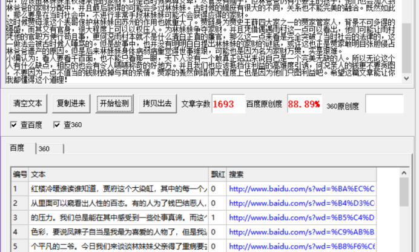

《红楼梦》中好色二表哥受老太太之任看护妹妹回乡为何起了不道德之意？
红楼冷暖谁读谁知道，贾府这个大染缸，其中的每一个人都是现实社会人的真实写照，从里面可以窥看出人性的百态。有的人为了钱巴结恶人，有人为了家族忍受侮辱和沉重的压力。我们总是能在其中感受到一些处事真谛。而这个染缸中每个人的性格也是各有色彩，要说凤辣子自当是我最为喜爱的人物了，但是我近来忽然发现他的丈夫也不是一个平凡的二爷。今日我们来谈谈林妹妹父亲得了重病要去世时，他接受任务保护娇滴滴的林妹妹回归苏州争夺遗留的财产途中的事情。红楼中对于这一段的阐述特别少，让我们能发现的信息也寥寥无几，所以在那时到底有什么事情发生我们没办法搞明白，尽管这样我们仍然可以从其他章节的小地方清楚在这段长长的行途中这个表哥对黛玉有了一些没有道德的小心思。
这个表哥琏二爷是个让人看不清的怪人。若认为他是一个好人，可他却想骗取尤家二姑娘为二房妻子，背弃了和凤嫂子的情爱誓言，最终两人不再如初般恩爱，好像是两条路上的生疏之人，更可怕的是因为他和鲍家妇人私下乱搞被凤嫂子发现而让鲍家妇人含辱自尽，身上背上了一条赤裸裸的人命。其短短一辈子，确实风流了无数美少女，在品行上只能用一个好色来象征他。但是若说他是一个坏人也不合理，他从知道事情开始就不爱官途，只在贾家与夫人一起掌管大大小小的事务，成为一个根本的大管家。但是他身上没有王侯将相的通病，并没有认为有钱就是天下，有钱就了不起。在因阻止雨村巴结他爸爸想打死卖扇子的商人而被贾赦打了一顿这件事上可以看出来，他珍惜人命，与旁人有很大人生观的区别。所以他这个人值得品味。不能一味认为他是一个不道德的二爷。那么他保护黛玉的路途中，到底有什么玩味的事情发生呢？他的大妻子轻而易举道明了谜底。
这个谜底自然不可能是男女的情感问题，虽然这个表哥喜爱美人美色，平生不记算没名字的女人便有大大小小四个妻子小妾，大到精明的凤嫂子，小到大房妻子的陪嫁丫头。或许有的人会觉得他见色成痴，但是对于黛玉这个娇妹妹，他可能心里只有宠爱之意，绝对没有侵犯的心思。可是说到头其实只是因为钱。
在红楼中，凤辣子有一次请大观园众人坐在一起喝茶，当时黛玉和宝玉的情事她抬眼便知晓，便打趣起了两位小朋友，问众人他们二人不是顶顶合适的吗。古时候大家族的婚姻往往不由自己的心意，若是碰上自己心喜而又家事匹配的实在是太少了。而凤嫂子的这一句话无论是相貌，家世背景还是拥有的私产都可以完美相配。从这一出可以看明白林妹妹也是富裕千金呢，毕竟贾哥哥可是家有万千银呀，何况还有一个做贵妃的表姐呢。所以他们俩人相配足可以说明凭借如海的偌大家产林妹妹丝毫不逊色。
林爸爸是五代列候的官员，而在他去世的时候除了林妹妹这一个大房并没有其他子女，只有她一个千金。如果放在现代社会中，应该由林妹妹全权继承他的家财。可是古时候男尊女卑，尽管没有嫡子，但林爸爸仍有小妾生的孩子，他们也会加入到林爸爸的家财分配中，并且最后获得的可能会多过林妹妹。古时候的嫡庶有很大的不同，关系也不能完美的融洽。既然如此，那么要是在当时社会中，不进行非常手段林妹妹可能不会获得应得的家财。
这时候贾母派这个表哥保护林妹妹回苏州的作用也就重大了。贾琏身为贾史王薛四大家之一的贾家管家人，背景不可多得的强盛，而其又有官身，很大程度上可以以权压人。为林妹妹争夺家财。并且凭借偶遇雨村这一点可以看出，他们可能让雨村凭他的官职方便行苟且事，更何况雨村本就不是什么清白正直的廉官，那么这一点来看是完全突破了当时社会的法律的，这一做法会被古时候人唾骂的。但是故事中，也并没有明明白白提出林妹妹的家财的谜底，或许这也正是贾家敢明目张胆侵占林爸爸遗产的原因。但是后来林妹妹身体病弱病重觉得世事维艰，可能也是因为名为家财万贯，实是艰难。
小编认为：看人要看千百面，也不能只看那一眼，天下人没有一个敢真正站出来说自己是一个完美无缺的人。所以无论这个人有什么缺点，相反的也会有令人啧啧称奇的好地方。并且我们也应该抵挡住利益的高难度引诱，何况亲人的钱更不要贪图，不要因为一点不值当的钱财毁掉与其的亲情。贾家的轰然倒塌很大程度上也是因为他们只图利益吧。希望这篇文章能让你我都懂得这个道理！
